Fly the Space Shuttle in FA
在 FA 裡駕駛太空梭
A brand-new shape, not a reskin. The orbiter sits on its orange external tank between two solid rocket boosters and stands upright for launch. As it gains speed it pitches over into level flight, and once the boosters and the tank are gone you fly a textured orbiter home and land it on its own 3D gear.
全新做的外形，不是換皮。軌道器掛在橘色外掛燃料箱上，兩側是固態火箭助推器，發射時整組直立。加速後機身慢慢轉成水平飛行；助推器和燃料箱丟掉之後，就是一架有貼圖的軌道器，可以飛回來用自己的 3D 起落架降落。
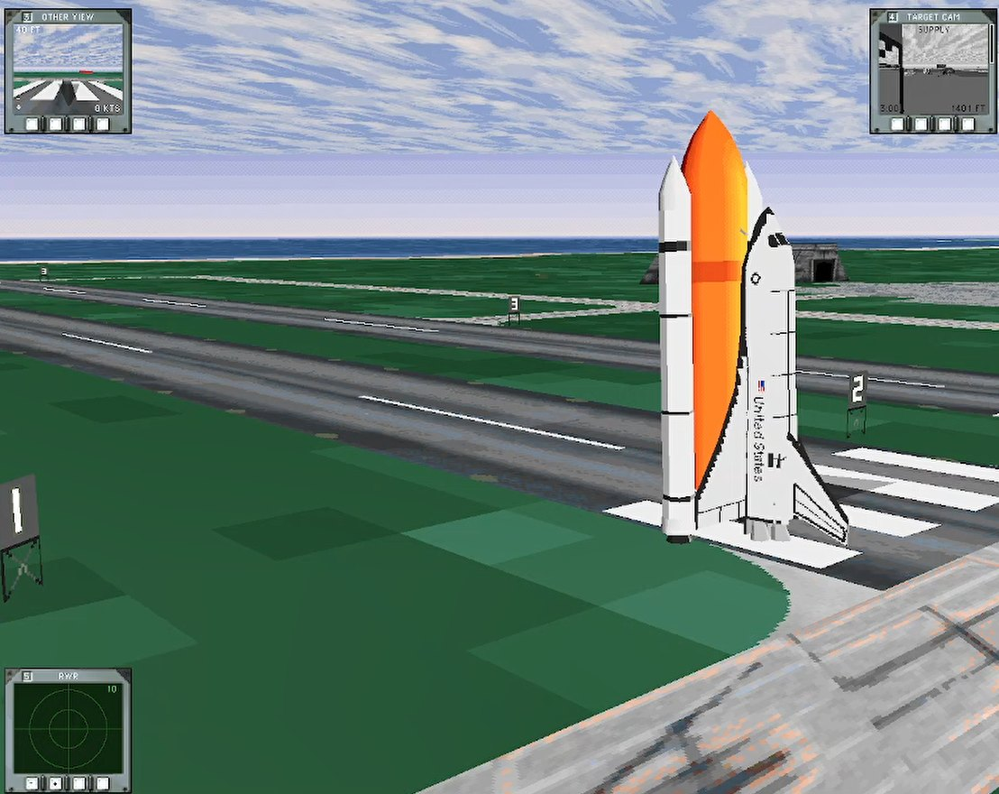
From launch to landing
從發射到降落
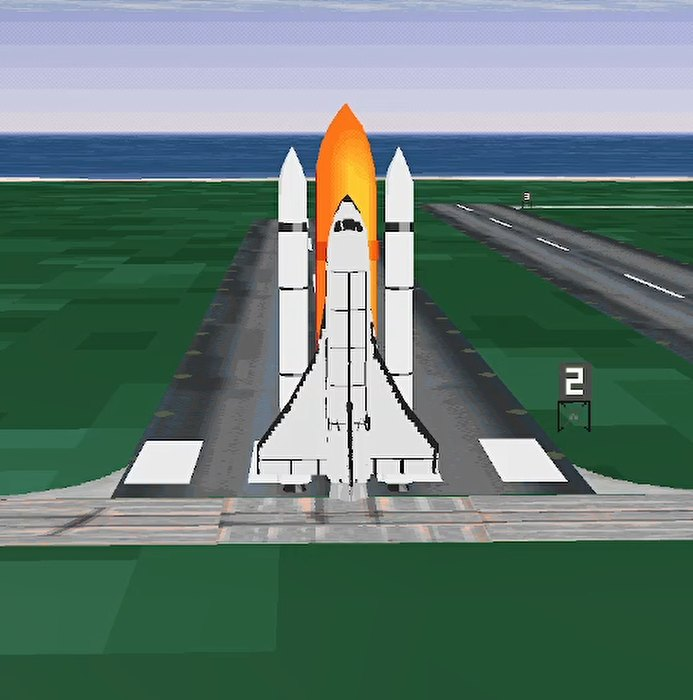
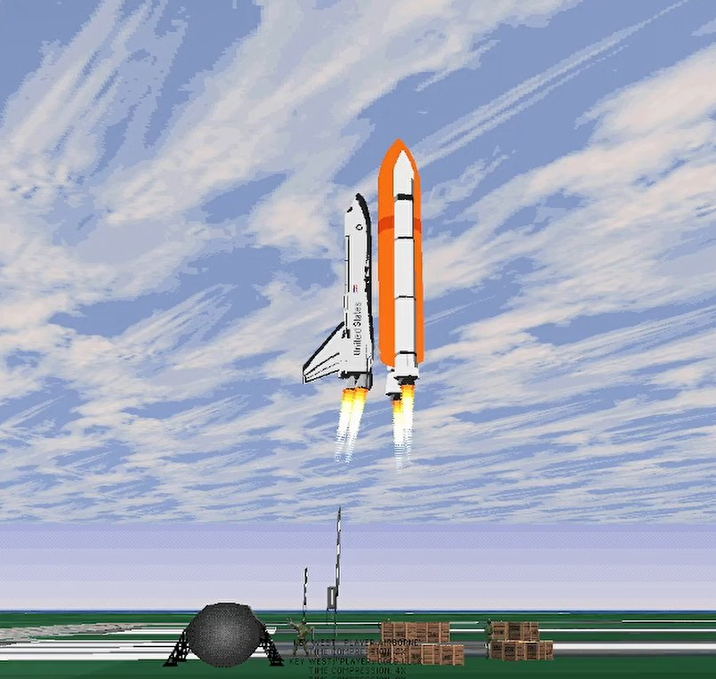
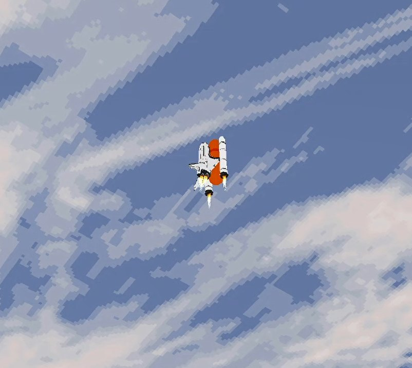
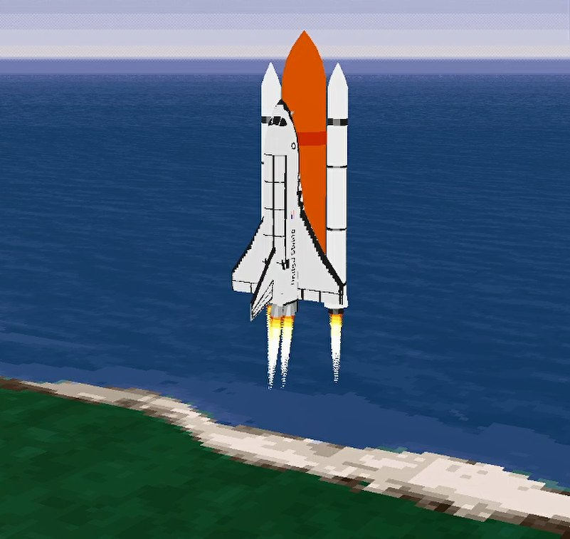
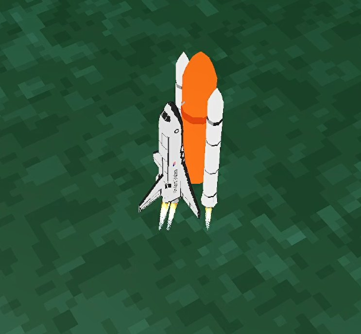
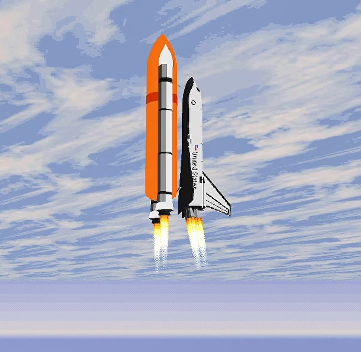
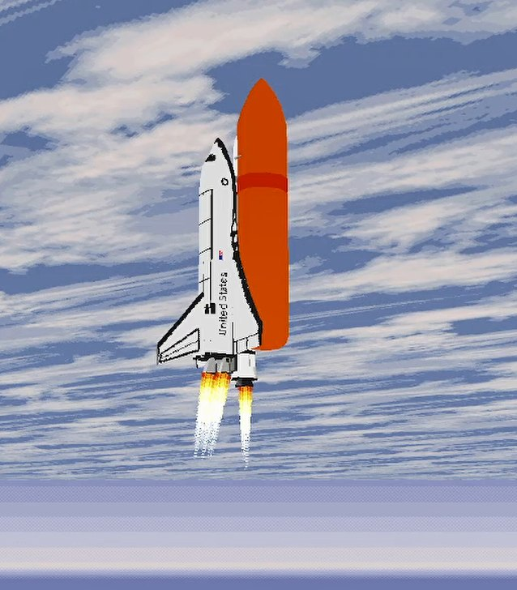
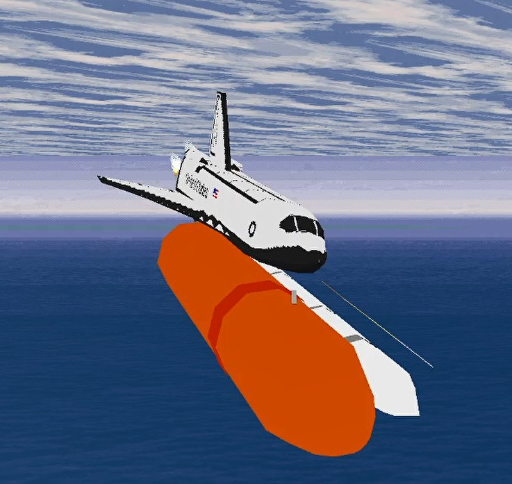
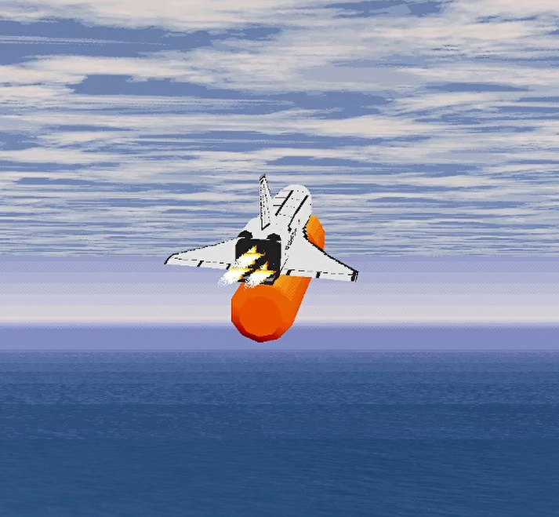
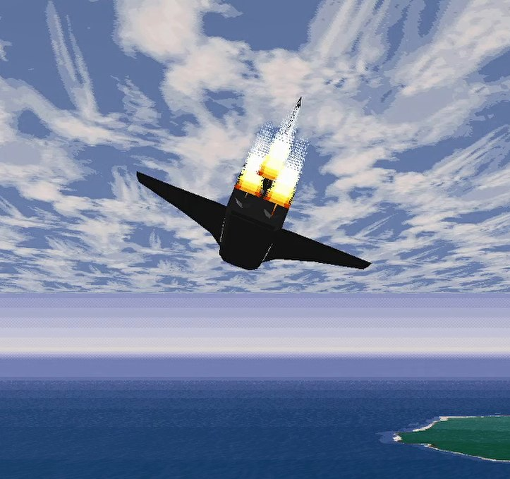
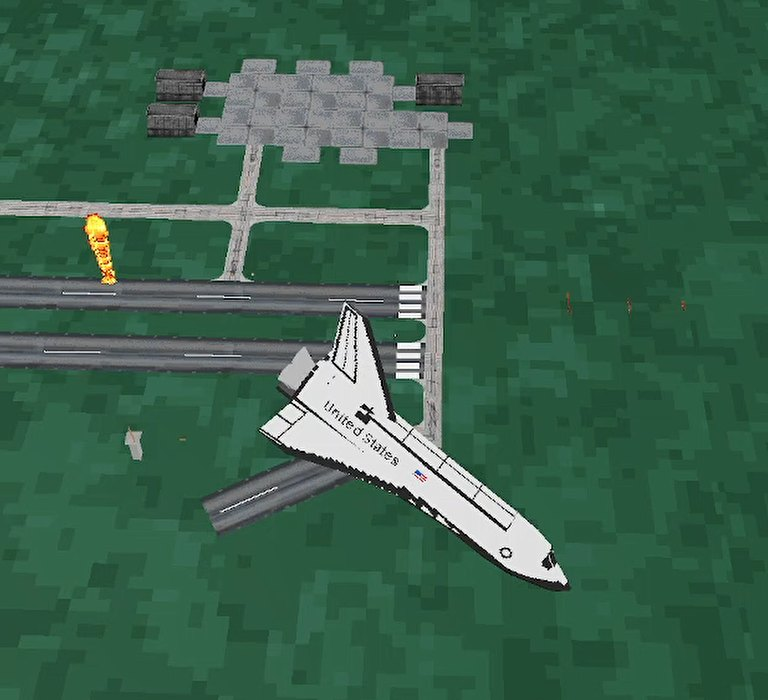
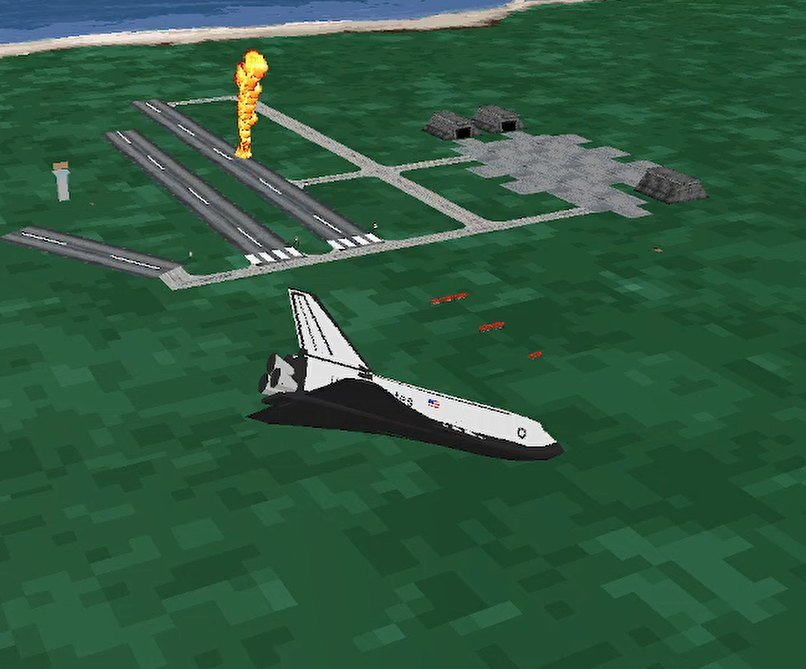
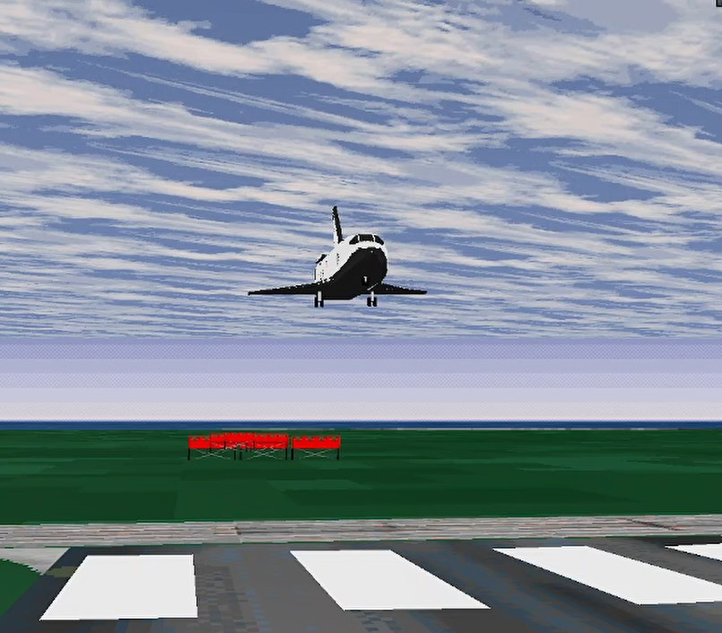
In-game screenshots from FA 1.02f with the released files, taken by Kuoyi.
以上是 Kuoyi 用發布版檔案在 FA 1.02f 裡的實機截圖。
Look at it in 3D
3D 檢視
This is the shipped SHUTTLE.SH with _SHUTTLE.PIC, drawn straight from the files by the SH gallery. The gallery shows the orbiter on its own (the tank, boosters and gear appear in the game from the loadout). Drag to rotate, scroll to zoom, double-click to enlarge.
下面就是發布版的 SHUTTLE.SH 和 _SHUTTLE.PIC，由 SH gallery 直接讀檔畫出來。這裡只顯示軌道器本身（燃料箱、助推器和起落架在遊戲裡依掛載出現）。拖曳旋轉、滾輪縮放、雙擊放大。
What you get
有哪些功能
How it works
怎麼做到的
Everything happens in the shape and the PT file. FA.EXE was not changed.
全部都在外形檔和 PT 檔裡完成，FA.EXE 完全沒有動。
| Piece | 部分 | How | 做法 |
|---|---|---|---|
| The shape | 外形 | Generated by a Python script (orbiter, fin, OMS pods, tank, boosters, gear, flames) and written into the F-86 shape as a container, with its own draw-order tree so parts hide each other correctly. | 用 Python 程式產生（軌道器、垂直尾翼、OMS 莢艙、燃料箱、助推器、起落架、火焰），放進 F-86 外形當容器，並有自己的繪製順序樹，讓零件之間正確遮擋。 |
| Launch tilt | 發射傾角 | A small piece of x86 inside the shape reads the aircraft's speed and the booster station, then rotates and lifts the whole stack before it is drawn. | 外形裡的一小段 x86 讀取飛機速度和助推器掛點，在畫之前把整組旋轉並抬高。 |
| Parked attitude | 停機姿態 | PT field PLANE[65] is the parked pitch in degrees. The shuttle uses −3, so it sits nose-low with both gears on the ground. This field is now in the PT Editor as "Parked Pitch". | PT 的 PLANE[65] 欄位是停機俯仰角（度）。太空梭用 −3，停好時機頭朝下、前後輪都著地。這個欄位現在在 PT 編輯器裡叫「停機俯仰角」。 |
| Flight model | 飛行模型 | The PT has a 100,000 ft ceiling, and the low-speed side of the flight envelope matches the F-14, so a landing feels fast like a real shuttle (1 G stall about 270 ft/s). | PT 的升限是 10 萬呎，包線的低速段和 F-14 一樣，所以降落時有真實太空梭那種速度感（1G 失速約 270 ft/s）。 |
| No stray strokes | 不會亂飛的面 | The visibility box inherited from the F-86 was far too small, so up close FA skipped clipping and the nose and belly streaked across the screen. It now covers the whole stack. | 從 F-86 留下來的可見範圍盒太小，近距離時 FA 跳過裁切，機頭和機腹就變成橫跨畫面的長條。現在範圍盒包住整組。 |
Things to know
使用注意事項
How to install
安裝方式
- Copy
SHUTTLE.SHand_SHUTTLE.PICto where your FA install loads add-on SH and PIC files, andSHUTTLE.PTto where it loads PT files. - Pick the Space Shuttle ("Shuttle") as your aircraft, and load the tank and boosters for a launch.
- Light the afterburner to launch. Drop the boosters and then the tank when you want to fly the orbiter alone.
- 把
SHUTTLE.SH和_SHUTTLE.PIC放到 FA 讀取外加 SH、PIC 檔的地方，SHUTTLE.PT放到讀取 PT 檔的地方。 - 選太空梭（「Shuttle」）當座機，要發射就掛上燃料箱和助推器。
- 開後燃器發射。想單獨飛軌道器時，先丟助推器，再丟燃料箱。
The generator script is in tools/shgen/shuttle. What we learned along the way is in the SH edit notes (section 19) and the flight model notes (section 5.10).
產生外形的程式在 tools/shgen/shuttle。過程中學到的東西寫在 SH 修改筆記（第 19 節）和飛行模型筆記（第 5.10 節）。